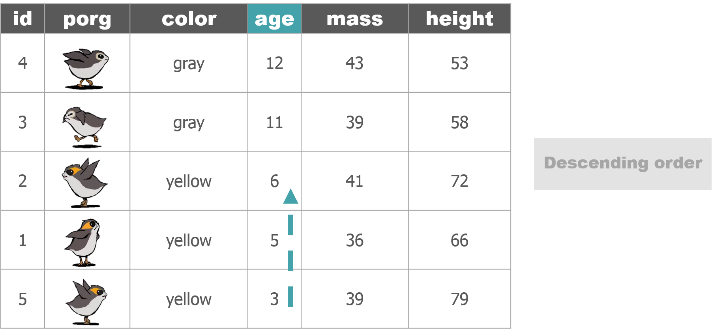

Good morning, young Jedis!

Day 2 morning schedule
- Review of Day 1
- Add a column with a condition
- Summarize your data
- String together many functions
- Group or categorize your data
- Save data
- Review of Day 1
- Add a column with a condition
- Summarize your data
- String together many functions
- Group or categorize your data
- Save dataThe poggle of porgs will once again help us review the dplyr functions. Follow along by downloading the porg data from the URL below.
library(readr)
porgs <- read_csv("https://itep-r.netlify.com/data/porg_data.csv")porgs
select


arrange



filter


mutate

summarize

group_by
ifelse()##mutate() PLUS ifelse() is powerful! {-}

Sometimes you may want the value of a new column to depend on the value of an existing column, in other words you want to mutate() conditionally. We use ifelse() to do this.
ifelse(If this is true, "Do this", "Otherwise do this thing")library(dplyr)
library(readr)
#Get the data
scrap <- read_csv("https://itep-r.netlify.com/data/starwars_scrap_jakku.csv")
# Convert the TONS in all capital letters to title case "Tons"
# On Day 1 we did this using tolower()
scrap <- scrap %>%
mutate(units = ifelse(units == "TONS", "Tons", units))Congratulations of galactic proportions to you. We have a clean and tidy data set. If BB8 receives new data to append, we can re-run this script and in 5 seconds we will have a cleaned up data set again!
left_join()left_join(table1, table2, by = c("columns to join by"))
BB8 found a unit converter table while surfing the web. How does BB8 keep doing that!? If we join our scrap data to the unit converter table we can really start digging into what would be most profitable for Rey. First, let’s talk about left_join()

starwars_heights
| starwars_name | height |
|---|---|
| Luke Skywalker | 172 |
| C-3PO | 167 |
| Darth Vader | 202 |
| Leia Organa | 150 |
| Greedo | 246 |
starwars_homeworlds
| starwars_name | homeworld |
|---|---|
| Luke Skywalker | Tatooine |
| C-3PO | Tatooine |
| Darth Vader | Tatooine |
| Leia Organa | Alderaan |
| Ayla Secura | Ryloth |
Uh oh! There’s no “Ayla Secura” in the height table and there’s no “Greedo” in the homeworld table. Can we still join the tables? Run the code below to see what happens.
| starwars_name | height | homeworld |
|---|---|---|
| Luke Skywalker | 172 | Tatooine |
| C-3PO | 167 | Tatooine |
| Darth Vader | 202 | Tatooine |
| Leia Organa | 150 | Alderaan |
| Greedo | 246 | NA |
Did it work? Yes. When left_join added the height column to the starwars_homeworlds table it only entered a value for the homeworld when the tables had a matching Star Wars character name. So when R couldn’t find “Greedo” in the homeworld table, the Star Wars character’s homeworld was recorded as NA.
Now let’s imagine that the starwars_height table has two characters named Darth Vader with different heights. What will happen when you join the tables?
| starwars_name | height |
|---|---|
| Luke Skywalker | 172 |
| C-3PO | 167 |
| Darth Vader | 202 |
| Darth Vader | 246 |
| Leia Organa | 150 |
| Greedo | 173 |
When you run the code below you’ll see that left_join is very thorough and adds each height it finds for Darth Vader as a new row in the joined table.
# Create new tables
starwars_heights <- data_frame(starwars_name = c("Luke Skywalker", "C-3PO", "Darth Vader", "Darth Vader", "Leia Organa", "Greedo"), height = c(172,167,202,246, 150, 173))
starwars_homeworlds <- data_frame(starwars_name = c("Luke Skywalker", "C-3PO", "Darth Vader", "Leia Organa", "Ayla Secura"), homeworld = c("Tatooine","Tatooine","Tatooine", "Alderaan", "Ryloth"))
# Join the tables together by Star Wars character name
height_and_homeworld <- left_join(starwars_heights, starwars_homeworlds, by = c("starwars_name" = "starwars_name" ))
# Check number of rows
nrow(height_and_homeworld)
height_and_homeworld| starwars_name | height | homeworld |
|---|---|---|
| Luke Skywalker | 172 | Tatooine |
| C-3PO | 167 | Tatooine |
| Darth Vader | 202 | Tatooine |
| Darth Vader | 246 | Tatooine |
| Leia Organa | 150 | Alderaan |
| Greedo | 173 | NA |
This results in a table with one extra row than we had before. So growing table sizes are a good sign of duplicate values when you’re using left_join. In practice, when you see this you’ll want to investigate why one of your tables has duplicate entries, especially if the observation for the two rows is different (like Darth Vader’s age). In this situation, we’d want to find out whether we really had two Star Wars characters named Darth Vader, or if someone made two different guesses about Darth Vader’s age.
Back to the scrap data! We don’t have time for scuttlebutt, we have actual work to do and need to help Rey. BUT, we can do that way more efficiently now that we know left_join()! Remember that BB8 found a unit converter table while surfing the web. If we join our scrap data to the unit converter table we can start really digging into what would be most profitable for Rey.
library(readr)
# The data's url
convert_url <- "https://itep-r.netlify.com/data/conversion_table.csv"
# Read in the conversion data
convert <- read_csv(convert_url)
head(convert, 3)## # A tibble: 3 x 3
## item units pounds
## <chr> <chr> <dbl>
## 1 Bulkhead Cubic Yards 321
## 2 Hull Panel Cubic Yards 641
## 3 Repulsorlift array Cubic Yards 467library(readr)
library(dplyr)
# Read in the larger scrap database
# Note this data set has items that are in units other than tons.
scrap <- read_csv("https://itep-r.netlify.com/data/starwars_scrap_jakku_full.csv")
# Run the following code to investigate what units are in the dataset.
unique(scrap$units)## [1] "Cubic Yards" "Items" "Tons"# Join the scrap to the conversion table
scrap <- left_join(scrap, convert, by = c("item" = "item", "units" = "units"))
# Since our column names are the same, left_join will find the matching column names
# AND R tells you what columns it joined.
scrap <- left_join(scrap, convert)
head(scrap, 5)## # A tibble: 5 x 7
## item origin destination amount units price_per_pound pounds
## <chr> <chr> <chr> <dbl> <chr> <dbl> <dbl>
## 1 Bulkhead Cratert~ Raiders 4017 Cubic ~ 1005. 321
## 2 Starship sen~ Outskir~ Trade carav~ 1249 Cubic ~ 1129. 637
## 3 Starship sen~ Outskir~ Niima Outpo~ 4434 Cubic ~ 1129. 637
## 4 Hull Panel Cratert~ Raiders 286 Cubic ~ 843. 641
## 5 Starship sen~ Cratert~ Trade carav~ 305 Cubic ~ 1129. 637Help! Remember to type ?left_join if you are wondering what the arguments are.
We now have the amounts sold, we know how much of that amount is in pounds, and we know the the price per pound. We want to know the total amount of credits for each transaction. How would we calculate that?
# Calculate the total credits for each transaction
scrap <- scrap %>%
mutate(_______ = _______________)Total price
We now have the amount sold, the conversion to pounds, and the price per pound, but we want to know the total amount of credits for each transaction. How would we calculate that?
# Calculate the total credits for each transaction
scrap <- scrap %>%
mutate(credits = _______ * _______ * ________)Total price
We now have the amount sold, the conversion to pounds, and the price per pound, but we want to know the total amount of credits for each transaction. How would we calculate that?
# Calculate the total credits for each transaction
scrap <- scrap %>%
mutate(credits = amount * pounds * price_per_pound)We as data analysts often get questions like, What’s the highest number? What’s the lowest number? What is the mean tonnage from Cratertown? So, let us move on to summarize().
summarize() this
summarize() allows you to apply a summary function like median() to a column and collapse your data down to a single row. To really dig into summarize you’ll want to know some common summary functions, such as sum(), mean(), median(), min(), and max().
sum()Use summarize() and sum() to find the total credits from all Salvage.
summarize(scrap, total_credits = sum(credits))mean()Use summarize() and mean() to calculate the mean price_per_pound in the Salvage report.
summarize(scrap, mean_price = mean(price_per_pound, na.rm = T))Note the
na.rm = TRUEin themean()function. This tells R to ignore empty cells or missing values that show up in R asNA. If you leavena.rmout, the mean function will return ‘NA’ when it finds a missing value in the data.
median()Use summarize to calculate the median price_per_pound in the Salvage report.
summarize(scrap, median_price = median(price_per_pound, na.rm = T))
max()Use summarize to calculate the maximum price per pound any scrapper got for their Salvage.
summarize(scrap, max_price = max(price_per_pound, na.rm = T))
min()Use summarize to calculate the minimum price per pound any scrapper got for their Salvage.
summarize(scrap, min_price = min(price_per_pound, na.rm = T))
nth()Use summarize() and nth(Origin, 12) to find the name of the Origin City that got the 12th highest scrapper haul.
Hint: Use arrange() first.
arrange(scrap, desc(credits)) %>% summarize(price_12 = nth(origin, 12))
sd()What is the standard deviation of the credits?
summarize(scrap, stdev_credits = sd(credits))
quantile()Quantiles are useful for finding the upper or lower range of a column. Use the quantile() function to find the the 5th and 95th quantile of the prices.
summarize(scrap,
price_5th_pctile = quantile(price_per_pound, 0.05, na.rm = T),
price_95th_pctile = quantile(price_per_pound, 0.95))Hint: add na.rm = T to quantile().
n()n() stands for count.
Use summarize and n() to count the number of reported Salvage records going to a Niima outpost.
Hint: Use filter() first.
niima_scrap <- filter(scrap, destination == "Niima Outpost")
niima_scrap <- summarize(niima_scrap, salvage_records = n())Create a summary of the scrap data that includes 3 of the summary functions above. The following is just an example.
summary <- summarize(scrap,
max_credits = __________,
weight_90th_pct = quantile(Weight, 0.90),
count_records = __________,
What if I want to string several of these data processing functions together? Do I have to keep writing scrap so many times? I have now written scrap like a million times and I am sick of it. Mother of moons! I have rebels to protect and I haven’t eaten in 2 days!
%>%Use the %>% young Padawan.

Luckily, you don’t have to do ALL that typing. The pipe let’s you can chain functions together and do everything in one go.
my_scrap <- scrap %>%
filter(item == "Acceleration compensator") %>%
arrange(desc(amount))group_by()Wouldn’t it be nice if we could easily find the mean price at every Origin City? Let’s really wookie this thing. It’s time for
group_by()!
Use group_by with the column Origin again, but this time use summarize to find the mean(price_per_pound) for each Origin City.
scrap_summary <- group_by(scrap, origin) %>%
summarize(mean_price = mean(price_per_pound, na.rm = T))
You can round the prices to a certain number of digits using the round() function. We can finish by adding the arrange() function to sort the table by our new column.
scrap_means <- group_by(scrap, origin) %>%
summarize(mean_price = mean(price_per_pound, na.rm = T),
mean_price_round = round(mean_price, digits = 2)) %>%
arrange(mean_price_round) %>%
ungroup()NOTE: The round() function in R does not automatically round values ending in 5 up, instead it uses scientific rounding. It rounds values ending in 5 to the nearest even number, so 2.5 rounded to the nearest whole number using round() is 2, and 3.5 rounded to the nearest whole number is 4. If you want to round all values ending in 5 up, then you’ll have to use a rounding function from another package.
Try using group_by with the column origin and then use summarize to count the number of Salvage reports from each city.
scrap_counts <- group_by(scrap, origin) %>%
summarize(origin_count = n()) %>%
ungroup()Ending with
ungroup()is good practice. This will prevent your data from staying grouped after the summarizing has been completed.
Let’s save the mean price summary table we created to a CSV. That way we can print it to have it transmitted through Droid courier to Rey. To save a data frame we’ll use the write_csv() function from our favorite readr package.
# Write the file to your results folder
write_csv(scrap_means, "results/Mean_prices_by_origin.csv")Warning! By default, R will overwrite a file if the file already exists in a folder. It will not ask for confirmation. To be safe, do not save processed data to your
data/folder.
mutate()We can bring back mutate to add a column based on the grouped values in a data set. For example, you may want to add a column showing the mean price by country to the whole table.
When you combine group_by and mutate the new column will be calculated based on the values within each group.
group_by(scrap, origin) %>% mutate(origin_mean_price = mean(price_per_pound, na.rm = T)) %>% ungroup()